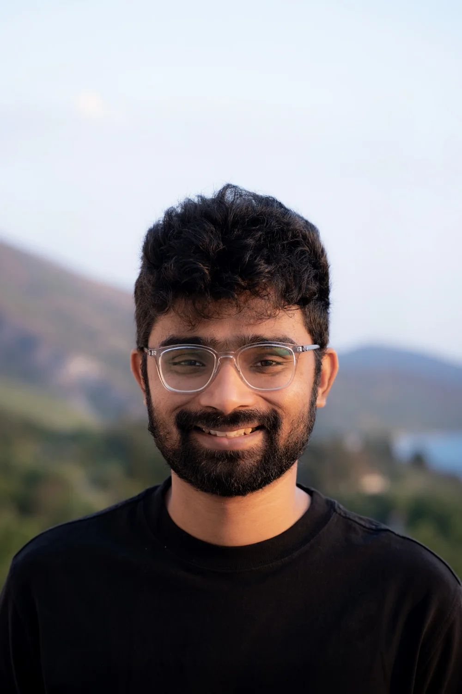

It started with taking things apart.

Hi, I’m Anas, a product designer based in Linz, Upper Austria. I grew up in southern India, where I spent most of my life and where a lot of my curiosity about how things work started.
As a kid, I was always taking apart toys, putting them back together, and trying to make them do something different. That curiosity eventually led me to study computer science. But somewhere along the way, I became more interested in the people using technology than the technology itself.
Design felt like a way to make complicated things simpler.
I started my career as a designer at an early-stage startup in 2018. Since then, I’ve worked across startups, scale-ups, and public companies, designing products at very different stages and levels of complexity.
Alongside my full-time work, I’ve also worked on side projects and with early-stage founders, helping teams turn rough ideas into products people can actually use, and in some cases helping them get ready to raise their first round of funding.
AI is changing how quickly we can make software, but I still find myself coming back to the same things: understanding people, thinking clearly, and caring about the details.
Generating an interface is becoming easier. Making something genuinely easy to use is still hard.
A lot of my taste has been shaped by the products I’ve used and worked on, the people I’ve collaborated with and followed, and the different ways of building products I’ve experienced over the years.
It’s still evolving. So am I.